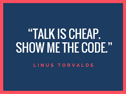

Linus Benedict Torvalds is a Finnish-American software engineer who is the creator and, historically, the principal developer of the Linux kernel, which is the kernel for GNU/Linux operating systems and other operating systems such as Android and Chrome OS.  He also created the distributed version control system Git and the scuba dive logging and planning software Subsurface. He was honoured, along with Shinya Yamanaka, with the 2012 Millennium Technology Prize by the Technology Academy Finland "in recognition of his creation of a new open source operating system for computers leading to the widely used Linux kernel."